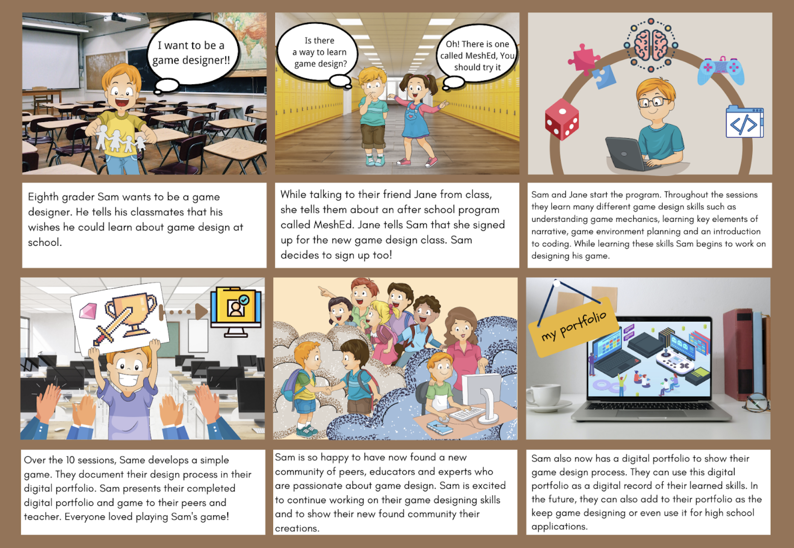

Problem of View
Currently, middle school students in Brooklyn schools do not have access to an in-school course that focuses on coding and game design, despite having interest in potentially exploring this career path. Students and schools need a course designed for a hybrid model to accommodate for COVID learning and student interest that allows them to explore game design and computer science as potential career paths.
Concept Description
We have designed a set of ten lessons based on the Makecode platform. In this course, students will now learn about narrative in game design and build the story framework of the game by, for example, using the inkelwriter platform to assist in narrative writing. We will then introduce programming for simulation, which is based on the Makecode platform. Learners will learn modular code and learn the logic behind it. As an extension, they can also learn real programming on their own (the Makecode platform supports the conversion of modular code into real code). Finally, we will test the game and help the learners to organize the whole project and fill in their electronic portfolio. This will support them to be more competitive in their future school and career paths.
Storyboard

Target Learners
The target learner group will be students in middle school (grades 6-8)
Learning Goals
Students will learn foundational coding skills that they can apply to build a game.
Students will engage in social and emotional learning through collaboration and storytelling.
Learning Theories
Constructionism - Constructionism advocates student-centered, discovery learning where students use what they already know to acquire more knowledge. We recognize that most students have their own prior knowledge, which is not the same. Although they are all at the beginning level of programming, they have different personal interests and future concentrations they wish to pursue, and other existing skills. Therefore, we have chosen constructionism as the theoretical basis for our curriculum. We hope to help students explore their own interests and learn new knowledge with their minds. This is why we set up the big project at the end of the semester and the workshops in the course. We want them to choose the topic they are interested in and helpful to their own situation so that we can assist them in knowing how to build their own learning system.
Metacognition - Metacognition is an awareness of one's thought processes and understanding of the patterns behind them. It is the process of thinking about thinking. It can help people monitor their learning process and improve their overall abilities. We felt that is an essential step to help to learn. We plan to design more self-reflection sections at the end of class, aiming to assist the students in building up their metacognition.
Project-based learning - Project-based learning focuses on student-centered learning, which provides real-world practices in the learning process. It gives students a chance to transfer what they learned in the class and apply them to real-world cases, which is a crucial part of learning. We may use PBL theory to string our courses together based on this. Break down a big project into different small steps, and guide students step by step to eventually complete their projects independently to be proficient in applying what they have learned in class in their projects and the real world.